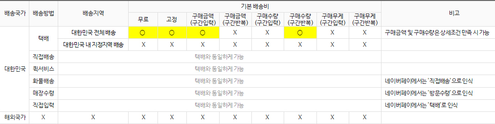
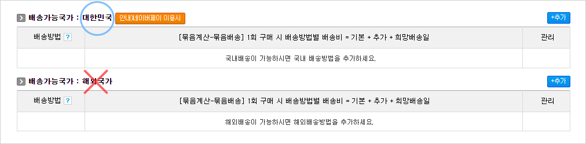
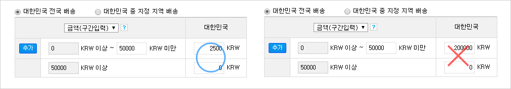
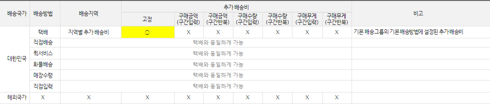

1 기본배송비
상품에 연결된 배송그룹의 배송방법별 기본배송비가 표1과 같을 때 네이버페이 결제 가능표1 네이버페이 기본배송비 조건
표1 설명1. 네이버페이는 대한민국 배송만 결제되며, 해외국가 배송은 결제되지 않습니다. 아래 화면을 참조하세요.
표1 설명2. 네이버페이는 대한민국의 특정 지역만 배송 가능하도록 제한하면 결제되지 않습니다.
또한 원화(KRW)로만 결제되며 외화로는 결제되지 않습니다. 아래 화면을 참조하세요.
표1 설명3. 네이버페이는 '택배(직접입력 포함)', '퀵서비스', '직접배송(화물배송 포함)', '방문수령(매장수령)＇의 모든 배송방법이 결제됩니다.
단, ‘퀵서비스’의 경우 선/착불 설정과 상관 없이 무조건 착불로 네이버페이와 연동되어 결제됩니다. 아래 화면을 참조하세요.
표1 설명4. 네이버페이는 ‘무료’, ‘고정’, ‘구매금액(구간입력)’ , ‘구매수량(구간반복)’ 기준으로 설정된 기본 배송비일 때 결제됩니다.
단, ‘구매금액(구간입력)’ 기준일 때는 구간은 2단계이어야 하며, 마지막 구간의 배송비는 ‘0’(무료)이어야 합니다.
단, ‘구매수량(구간반복)’ 기준일 때는 반복 구간의 수량이 동일하며, 배송비도 동일해야 합니다. 아래 화면을 참조하세요.
표1 설명5. 네이버페이는 기본 배송비가 20만원 초과 시 결제되지 않습니다. 아래 화면을 참조하세요.
2 추가배송비
기본배송그룹의 기본배송방법에 설정된 추가배송비가 표2와 같을 때 네이버페이에서 추가배송비 과금 가능표2 네이버페이 추가배송비 조건
표2 설명1. 네이버페이는 ‘고정’ 기준으로 설정된 추가 배송비일 때 결제됩니다.
주의사항은 해당 상품에 연결된 배송그룹이 아닌 기본 배송그룹의 기본 배송방법에 설정된 추가 배송비가 적용됩니다. 아래 화면을 참조하세요.